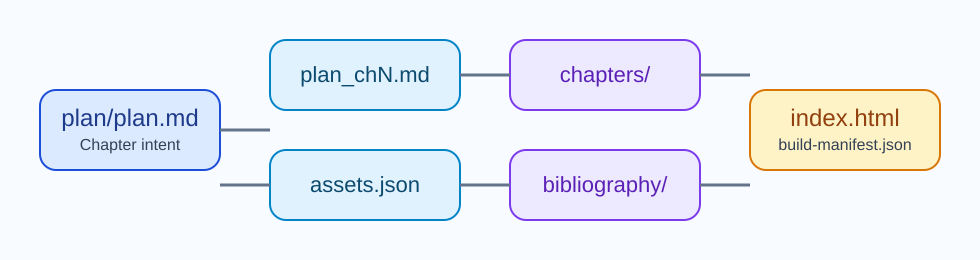

Skill Detail
article_build
article_build is the main executable skill currently present in the repository. It reads article-owned planning material, resolves generated chapter templates, verifies bibliography support, validates SVG assets, and emits the final HTML plus a build manifest without relying on repository-level helper modules.

| Depends on | None |
|---|---|
| Executable modules | skill.mjs, bibliography.mjs, referenceCatalog.mjs, renderHtml.mjs, svgValidation.mjs |
| Primary outputs | <articleRoot>/index.html, <articleRoot>/assets/, <articleRoot>/plan/build-manifest.json |
| Primary spec | DS005-article-build.md |
Self-Containment
The skill remains self-contained after the repository restructure. All executable logic used by the build stays inside skills/article_build/, and the repository no longer presents a competing shared src/ layer that downstream copies would not carry.
Validation Surface
The skill enforces more than file copying. It validates SVG geometry, checks that citations are supportable from cached evidence, rebuilds incrementally, and keeps the final HTML aligned with article-owned plans rather than hardcoded repository assumptions. The current repository also reuses its SVG validator for documentation maintenance tasks.
Relation to Tests
The tests under tests/article_build/ verify parsing, rendering, SVG validation, and deterministic rebuild behavior. They exist to validate the example and script code carried by the skill folder, not to define a deployment package for downstream projects.